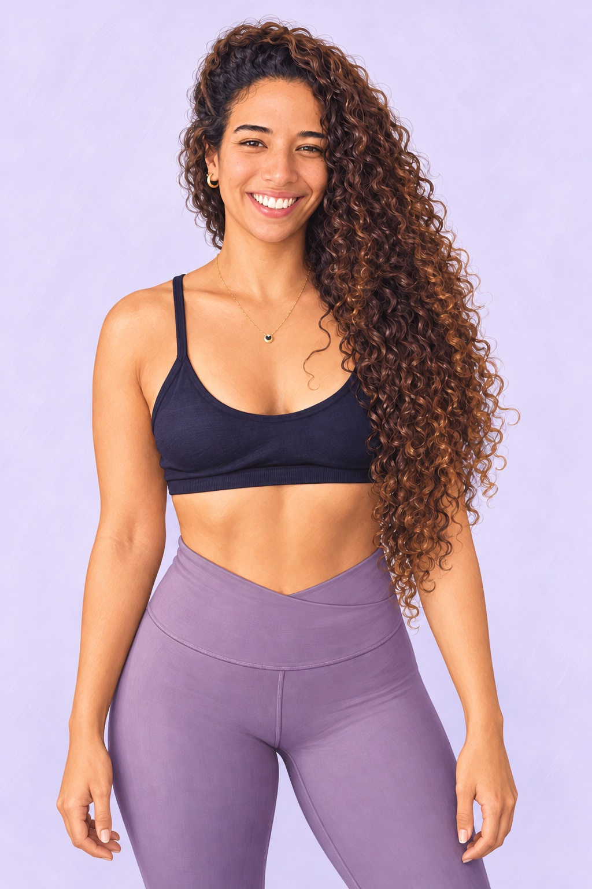
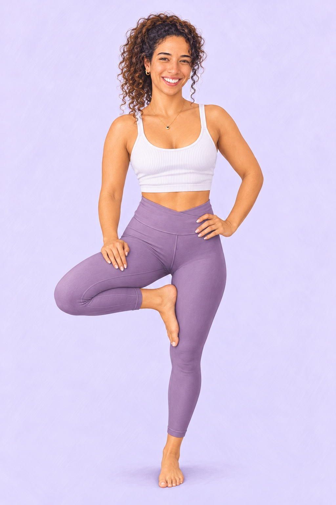

תוכנית אימונים עם כיוון ברור
אימוני כוח לכל הגוף עם דגש על הישבן, לצד עבודה על פלג הגוף העליון והליבה. נבחר מסלול של שניים או שלושה אימונים בשבוע ונעשה התאמות לפי הניסיון, היכולת, הציוד והזמן שלך.
ליווי אונליין אישי עם רעות רדאה
להתחיל להתאמן ולבנות הרגלים זה לא תמיד פשוט. במיוחד כשאת צריכה גם להחליט איזה אימון לעשות, לבחור תרגילים ולהבין איך כל זה משתלב עם התזונה והיום שלך.
בליווי שלי אנחנו עושות סדר בדברים האלה יחד. את מקבלת תוכנית ברורה, הסברים, חלופות וכלים למעקב באפליקציה. יש לך מסגרת לעבוד לפיה, ויש לך אותי לשאלות ולהכוונה.
פעמיים או שלוש בשבוע בבית או בחדר כושר

את פותחת את התוכנית, קוראת את ההנחיות ורואה איך לבצע את התרגילים. במקום לתכנן בכל פעם אימון מחדש, יש לך בסיס לעבוד לפיו.
עם התרגול את מכירה את התנועות, לומדת לבחור עומס מתאים ומבינה מתי ואיך להשתמש בחלופות. כשמשהו לא ברור, את יכולה לכתוב לי לפני הביצוע.
המטרה היא שהאימונים יהפכו לחלק מוכר בשגרה שלך, ושעם הזמן תרגישי יותר בטוחה גם כשאת מתאמנת לבד.
אימוני כוח לכל הגוף עם דגש על הישבן, לצד עבודה על פלג הגוף העליון והליבה. נבחר מסלול של שניים או שלושה אימונים בשבוע ונעשה התאמות לפי הניסיון, היכולת, הציוד והזמן שלך.
כשהציוד תפוס או כשאת מתאמנת במקום אחר, יש אפשרויות נוספות לתרגילים. נבחר חלופות שמתאימות לך, כדי שתוכלי לשמור על הכיוון של התוכנית. כאב או מגבלה דורשים התאמה אישית.
התוכנית כוללת הנחיות לביצוע וסרטונים לתרגילים שיש להם הדגמה במאגר. חשוב לי שתכירי את התנועה ותביני על מה את עובדת. אם משהו אינו ברור, כתבי לי.
את מתעדת אימונים, חזרות ומשקלים וממלאת שאלון מעקב. אני עוברת על העדכונים לפי מסגרת הליווי, ובודקת איתך מה מתקדם ומה דורש שינוי. זמני המענה ותדירות המשוב יוגדרו לפני ההצטרפות.
באפליקציה יש כלי תיעוד תזונה, תפריטים וחלופות. נבהיר לפני ההצטרפות מה כלול במענה התזונתי שלך. התאמת תפריט אישי דורשת בקרה מקצועית של דיאטנית קלינית.
חשוב לי שתדעי למה את עושה את הדברים. איזה שרירים עובדים בתרגיל, איך לבחור חלופה ואיך להתקדם בעומס בהדרגה. חשוב לי גם לתת מקום ללמידה על תזונה והרגלים, בהתאם למסגרת המקצועית של הליווי.
לא צריך ללמוד הכול ביום אחד. כל אימון הוא הזדמנות לתרגל ולהבין עוד קצת.
עם הזמן, התוכנית וההסברים יכולים להפוך לידע שאת משתמשת בו בעצמך. כזה שיעזור לך להגיע לאימון עם יותר ביטחון ולהתנהל גם כשהשגרה משתנה.
אני מאמנת כושר ומדריכת פילאטיס. תנועה מלווה אותי מאז שהייתי ילדה — מהריקוד, דרך הריצה ועד אימוני הכוח והפילאטיס.
הריצה נתנה לאנרגיה שלי מקום ועזרה לי לסדר את המחשבות. דרך הפילאטיס למדתי להקשיב לנשימה ולתנועה שלי.
היום אני אוהבת ללמד נשים להתחזק, עם דגש על הישבן ועם מקום לכל הגוף. חשוב לי שהאימון יהיה משהו שאת מבינה ויודעת להשתלב בו, ולא עוד דבר שמרגיש מסובך בתוך היום.
בליווי שלי נתחיל ממה שמתאים לך עכשיו, ונבנה משם הרגלים וידע שתוכלי לקחת איתך הלאה.

את מספרת לי על המטרה, הניסיון והשגרה שלך. אני מסבירה מה כולל הליווי ואיך אנחנו עובדות יחד.
טפסי ההיכרות והבריאות עוזרים לי להבין את נקודת ההתחלה שלך. תנאי השירות מוצגים לאישור.
נבחר את המסלול והחלופות שמתאימים לך, ותכירי את התוכנית ואת השימוש באפליקציה.
אנחנו עוקבות אחר ההתקדמות ועושות התאמות כשצריך. לא כל שבוע נראה אותו דבר, וגם זה חלק מהתהליך.
נבדוק יחד את הניסיון, היכולת ושאלון הבריאות שלך. לפי זה נתאים את נקודת הפתיחה ואת העומס.
חלק מהאפשרויות דורשות משקולות או גומיות. נבדוק מה יש לך ומה מתאים לתוכנית לפני שמתחילות.
נשמור על בסיס שמאפשר לך ללמוד את התרגילים ולהתקדם. נעדכן לפי הצורך, היכולת והמעקב שלך.
דרך WhatsApp והמעקב באפליקציה. תוכלי לרכז שאלות ולשלוח לי. זמני המענה, תדירות המשוב ומה כלול בליווי יובהרו מראש.
באפליקציה יש כלים לתיעוד ולחלופות. התאמת תפריט אישי אינה אוטומטית ונדרשת לה בקרה מקצועית. נבהיר בשיחה מה מתאים לך ומה כלול בשירות.
זה משתנה מאחת לאחת ותלוי בין היתר בהתמדה, בעומס, בתזונה ובהתאוששות. נעקוב אחרי ההתקדמות בלי להבטיח תוצאה או מועד אחידים.
נבדוק יחד מה מתאים למטרות ולשגרה שלך.
בואי נבדוק אם הליווי מתאים לךתוכנית אימונים | חלופות | הסברים | מעקב | קשר אישי
היקף השירות, זמני המענה ותנאי הליווי יובהרו בשיחה.